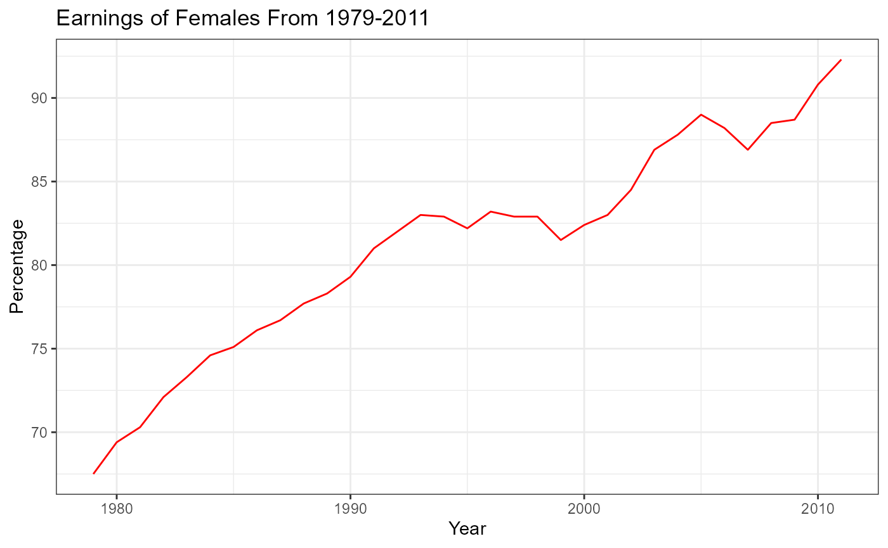

Women In The Workforce
WomInWorkShiny.RmdThis package contains data about how females fare in the workplace in terms of earnings, workforce, and employment rate throughout the years. It also contains information for both genders for comparison purposes. The data has been retrieved from the tidytuesday repository available on GitHub. The package also allows the user to explore said data with functions. An inbuilt Shiny App is present as well in the package which triggers when a function is run to launch a portal where users can gain insights about the data as well as interact with the app. In addition, the package also has a function which displays a plot when Finally, the package has a quadratic function which enables users to find out the roots of the quadratic equation.
Why WomInWorkShiny?
The package allows exploration of data related to women and gives the user the ability to view and manipulate the data further depending on what key takeaways they wish to have. The package also provides a relative ease of access of readability in the form of visualizations that can be found in the inbuilt shiny app. This skips the entire process of wrangling and plotting the visualizations themselves and the user can straightaway analyze the data in the easiest form, ‘visualization’. The visualizations also have an additional advantage of being interactive allowing users to subset the plot to their own liking.
Data Description:
- In the first dataset “earnings_female”, the variable ‘group’ was changed to ‘Age_Group’ to make more sense. The final data dictionary can be seen below:
| variable | class | description |
|---|---|---|
| Year | integer | Year |
| Age_Group | character | Age group of female |
| percent | double | Female salary percent of male salary |
- In the second dataset “employed_gender”, only a few variables were selected which were of interest. Next, the variables ‘full_time_female’, ‘full_time_male’, ‘part_time_female’, ‘part_time_male’ were all pivoted under a new variable called ‘Job_Type’ with their respective values under another new variable called ‘Percentage’. The final data dictionary can be seen below:
| variable | class | description |
|---|---|---|
| year | integer | Year |
| Job_Type | character | Type of Employment |
| Percentage | double | Percentage employed |
- In the third dataset “jobs_gender”, only a few variables were selected which were of interest. Next, the variables ‘workers_female’, ‘workers_male’ were all pivoted under a new variable called ‘Gender’ with their respective values under another new variable called ‘Workforce’. The final data dictionary can be seen below:
| variable | class | description |
|---|---|---|
| year | double | Year |
| occupation | character | Specific job/career |
| major_category | character | Broad category of occupation |
| minor_category | character | Fine category of occupation |
| total_workers | double | Total estimated full-time workers > 16 years old |
| workers_male | double | Estimated MALE full-time workers > 16 years old |
| workers_female | double | Estimated FEMALE full-time workers > 16 years old |
| percent_female | double | The percent of females for specific occupation |
| total_earnings | double | Total estimated median earnings for full-time workers > 16 years old |
| total_earnings_male | double | Estimated MALE median earnings for full-time workers > 16 years old |
| total_earnings_female | double | Estimated FEMALE median earnings for full-time workers > 16 years old |
| wage_percent_of_male | double | Female wages as percent of male wages - NA for occupations with small sample size |
- In the fourth dataset “jobs_earnings”, first only the required columns were selected from the “jobs_gender” dataframe. Then the gender columns were pivoted into one new column called ‘Gender’ with the values creating ‘Earnings’. The final data dictionary can be seen below:
| variable | class | description |
|---|---|---|
| year | double | Year |
| occupation | character | Broad category of occupation |
| minor_category | character | Fine category of occupation |
| Gender | character | Gender type |
| Earnings | double | Total earnings for full-time workers > 16 years |
- In the fifth dataset “jobs_workforce”, first only the required columns were selected from the “jobs_gender” dataframe. Then the gender columns were pivoted into one new column called ‘Gender’ with the values creating ‘Workforce’. The final data dictionary can be seen below:
| variable | class | description |
|---|---|---|
| year | double | Year |
| occupation | character | Broad category of occupation |
| minor_category | character | Fine category of occupation |
| Gender | character | Gender type |
| Workforce | double | Total emplyoment for full-time workers > 16 years |
The dataframes found in the package related to the data are as follows:
earnings_female()- Returns a tibble of earnings for females for various age groups shown year-wise.employed_gender()- Returns a tibble of employment rate for both genders regarding full-time and part-time job types shown year-wise.jobs_earnings()- Returns a tibble of earnings for both genders based on occupation shown year-wise.jobs_gender()- Returns a tibble with both earnings and workforce categorized by each gender based variable based on occupation, shown year-wise.jobs_workforce()- Returns a tibble of total number of workforce present for each occupation based on genders, shown year-wise.
The function in the package to solve a quadratic equation is as follows:
-
quadratic()- Takes three inputs which are the coefficients of a quadratic function and returns the roots of said function depending on what type of roots are available, determined by calculating the discriminant.
The function in the package to launch an inbuilt shiny app is as follows:
-
run_app()- Triggers the inbuilt shiny app which displays various plots and insights about how women fare in the workplace especially against men.
The function in the package to plot a graph based on inputs from the interactive elements from the shiny app is as follows:
earningsplot()- Displays a line chart for the entered age group for females from 1979 until 2011.age_groups- Returns a vector displaying all the available age groups present in the female earnings dataset to aid the user in entering valid age groups in theearnnigsplotfunction.
Examples:
head(earnings_female)
#> # A tibble: 6 × 3
#> Year Age_Group percent
#> <dbl> <chr> <dbl>
#> 1 1979 Total, 16 years and older 62.3
#> 2 1980 Total, 16 years and older 64.2
#> 3 1981 Total, 16 years and older 64.4
#> 4 1982 Total, 16 years and older 65.7
#> 5 1983 Total, 16 years and older 66.5
#> 6 1984 Total, 16 years and older 67.6
head(employed_gender)
#> # A tibble: 6 × 3
#> year Job_Type Percentage
#> <dbl> <chr> <dbl>
#> 1 1968 full_time_female 75.1
#> 2 1968 part_time_female 24.9
#> 3 1968 full_time_male 92.2
#> 4 1968 part_time_male 7.8
#> 5 1969 full_time_female 74.9
#> 6 1969 part_time_female 25.1
head(jobs_earnings)
#> # A tibble: 6 × 5
#> year occupation minor_category Gender Earnings
#> <dbl> <chr> <chr> <chr> <dbl>
#> 1 2013 Chief executives Management Male 126142
#> 2 2013 Chief executives Management Female 95921
#> 3 2013 General and operations managers Management Male 81041
#> 4 2013 General and operations managers Management Female 60759
#> 5 2013 Legislators Management Male 71530
#> 6 2013 Legislators Management Female 65325
head(jobs_gender,4)
#> # A tibble: 4 × 12
#> year occupation major_category minor_category total_workers workers_male
#> <dbl> <chr> <chr> <chr> <dbl> <dbl>
#> 1 2013 Chief executiv… Management, B… Management 1024259 782400
#> 2 2013 General and op… Management, B… Management 977284 681627
#> 3 2013 Legislators Management, B… Management 14815 8375
#> 4 2013 Advertising an… Management, B… Management 43015 17775
#> # ℹ 6 more variables: workers_female <dbl>, percent_female <dbl>,
#> # total_earnings <dbl>, total_earnings_male <dbl>,
#> # total_earnings_female <dbl>, wage_percent_of_male <dbl>
head(jobs_workforce)
#> # A tibble: 6 × 5
#> year occupation minor_category Gender Workforce
#> <dbl> <chr> <chr> <chr> <dbl>
#> 1 2013 Chief executives Management Male 782400
#> 2 2013 Chief executives Management Female 241859
#> 3 2013 General and operations managers Management Male 681627
#> 4 2013 General and operations managers Management Female 295657
#> 5 2013 Legislators Management Male 8375
#> 6 2013 Legislators Management Female 6440
quadratic(1,5,6)
#> # A tibble: 2 × 2
#> Roots Root_Type
#> <dbl> <chr>
#> 1 -2 Real & Distinct
#> 2 -3 Real & Distinct
quadratic(1,-6,9)
#> # A tibble: 2 × 2
#> Roots Root_Type
#> <dbl> <chr>
#> 1 3 Real & Repeated
#> 2 3 Real & Repeated
quadratic(5,2,1)
#> # A tibble: 2 × 2
#> Roots Root_Type
#> <cpl> <chr>
#> 1 -0.2+0.4i Imaginary
#> 2 -0.2-0.4i Imaginary
earningsplot("25-34 years")
age_groups
#> [1] "Total, 16 years and older" "16-19 years"
#> [3] "20-24 years" "25-34 years"
#> [5] "35-44 years" "45-54 years"
#> [7] "55-64 years" "65 years and older"References:
The Datasets were originally developed by jthomasmock and is available on the following GitHub link.